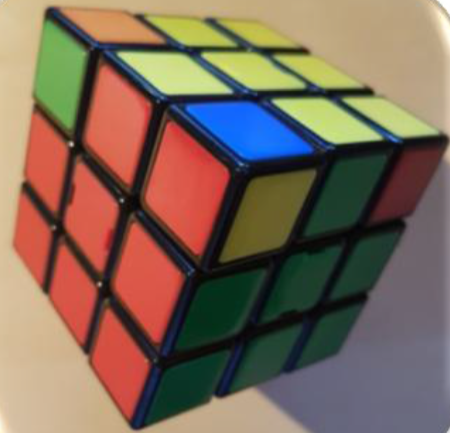

Resolucion del cubo de Rubik
Paso 1. Se hace una cruz en cualquier cara. Los brazos de la cruz tienen que coincidir con la pieza del medio de las caras de alrededor de la cruz. En la foto se ve formada una cruz en la cara blanca.

Paso 2. Se colocan las esquinas de la cara blanca, teniendo en cuenta que deben coincidir con los colores de las caras laterales.
Paso 3. A este paso se le llama hacer la “doble corona”. Hay que colocar cuatro piezas para tener resuelta la cara superior y las dos filas superiores del cubo.
Paso 4. Se gira el cubo y se hace una cruz en la cara amarilla. En este paso no es necesario que coincidan los colores de las caras laterales.

Paso 5. Ahora se trata de mantener la cruz en la cara amarilla y conseguir que coincidan también las caras laterales.
Paso 6. El penúltimo paso consiste en colocar las piezas de las esquinas en su posición, aunque no coincidan los colores. En la foto vemos como la pieza de color azul_amarillo_rojo, ocupa la posición correcta y sólo necesita girarse para estar bien colocada.
Paso 7. El último paso consiste en girar las cuatro piezas de las esquinas para que ocupen su posición correcta en el cubo.